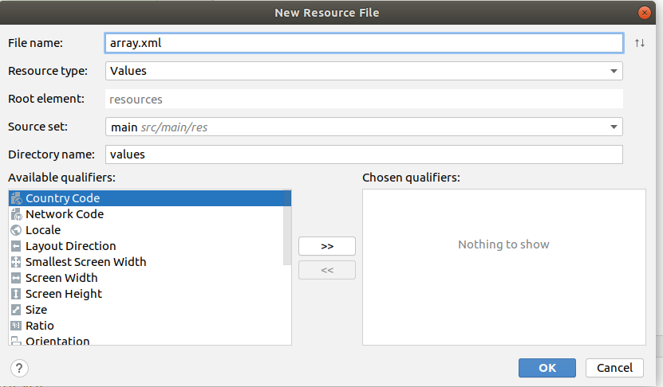
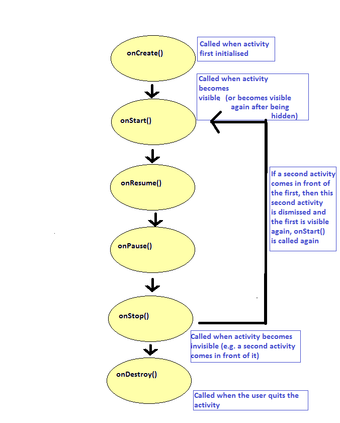

lateinit)In this section we will:
lateinit keyword and how it is useful in AndroidBefore we start on the main topic of preferences, I want to use this opportunity to introduce the Kotlin lateinit keyword. Imagine we want to initialise our map object in onCreate() and then access it from other methods in our main activity. How could we do this?
onCreate(), e.g.:
val map = findViewById<MapView>(R.id.map1)However this has the disadvantage that we would have to find the map using
findViewById() again if we wanted to use it in other methods of the activity, which is inefficient.class MainActivity: AppCompatActivity() {
val map = findViewById<MapView>(R.id.map1)
override fun onCreate(....) {
....
}
Unfortunately this would not work. We can only initialise variables which reference UI elements from onCreate() onwards, when the UI has been fully initialised.onCreate(), e.g.
class MainActivity: AppCompatActivity() {
var map : MapView? = null
override fun onCreate(savedInstanceState: Bundle?) {
map = findViewById<MapView>(R.id.map1)
....
}
This works, however because the map variable is nullable, we have to do null-safety checks throughout our code when using it.
As an alternative, we can use lateinit. In cases, such as this, we need to use a variable which we know will never be null (so we don't make it nullable) but we cannot initialise it when the class is first created. This is common in Android development, where frequently, we can only create objects in onCreate(), once the activity is fully initialised. So in these cases, we declare the variables lateinit to indicate that they will be initialised later, after the class is first created:
class MainActivity: AppCompatActivity() {
lateinit var map : MapView?
override fun onCreate(savedInstanceState: Bundle?) {
map = findViewById<MapView>(R.id.map1)
// Now we can use 'map' without null safety checks...
}
To persist data means to preserve data across multiple executions of the application. For example the first time you run an app you might enter your username and password to log on to a web server. The next time you run the app, you'll probably want your login details to be remembered. So we need some method of persisting data between individual uses of the app. There are a number of different mechanisms we can use, including:
Frequently a user might want to select preferences in an app. For example, they might want to select their preferred language or login details. Android makes this easy for us through the use of preferences. Preferences are selected by the user in a PreferenceScreen which can be defined in an XML file much like layouts can. In Kotlin code, you can then write a PreferenceFragment: a sub-component of an Activity designed specifically for displaying a PreferenceScreen.
The first thing we will look at is how to define a set of preferences in XML. There are a number of types of preference, we will look at:
The EditTextPreference is one of the simplest types of preference. It allows the user to store a single value in a text field: for example, if you wanted to store the default location of a map (as latitude and longitude) you could use two EditTextPreferences, one for the latitude and one for the longitude. Here is an example of a preferences XML file with two EditTextPreferences:
<PreferenceScreen xmlns:android="http://schemas.android.com/apk/res/android">
<EditTextPreference android:key="lat" android:defaultValue="50.9" android:title="Latitude" android:summary="Latitude to show the map at initially." />
<EditTextPreference android:key="lon" android:defaultValue="-1.4" android:title="Longitude" android:summary="Longitude to show the map at initially." />
</PreferenceScreen>
The CheckBoxPreference is also quite easy to understand. A CheckBoxPreference is a boolean value, which can be set to either true (if the checkbox is selected) or false (if it isn't). It is typically used for "on/off" values, for example in an app which accesses the internet to automatically download data about surrounding restaurants and cafes (their location, food and drink available, etc), the user might want to turn downloading on or off depending on whether they are connected to a wifi network. The XML is also quite simple:
<PreferenceScreen xmlns:android="http://schemas.android.com/apk/res/android">
<CheckBoxPreference android:key="autodownload" android:defaultValue="true" android:title="Auto-download"
android:summary="Auto-download nearby restaurant and cafe locations?" />
</PreferenceScreen>
The ListPreference is a bit more complex as it allows the user to pick from a list of values, typically presented as a set of
radio buttons. The list of values has to be defined somewhere, and that place is the arrays resource file (array.xml). In a similar manner to
strings.xml, array.xml is a convenient place to put all arrays that might be used in the UI. You can create the array.xml file by adding
a values XML file to your project: right click on res and
then create a new resource file, ensuring the type is Values.

A ListPreference contains an array of values so
we store all the values in the array.xml file. Here is an example of an array.xml file which could be used for a ListPreference:
<resources>
<string-array name="pizzaFlavours">
<item>Cheese, Tomato and Mushroom</item>
<item>Ham and Pineapple</item>
<item>Hot n Spicy</item>
<item>Seafood</item>
</string-array>
<string-array name="pizzaFlavourCodes">
<item>CTM</item>
<item>HP</item>
<item>HS</item>
<item>SF</item>
</string-array>
</resources>
If we now look at the preferences XML file for a ListPreference, note how this links to the arrays defined above:
<PreferenceScreen xmlns:android="http://schemas.android.com/apk/res/android">
<ListPreference android:key="pizza" android:title="Pizza flavour" android:summary="Choose your pizza flavour."
android:entries="@array/pizzaFlavours" android:entryValues="@array/pizzaFlavourCodes" />
</PreferenceScreen>
Note also how we refer to array XML resources in a similar way to strings; we use @array/arrayname to reference an array with a name of arrayname. Also note that in a real application, the android:title and android:summary would probably refer to entries in the strings.xml file, rather than hardcoded strings.
To actually show these preferences in a real app, we need to create a separate activity to show the preferences. This needs to incorporate a PreferenceFragment (or more specifically, a PreferenceFragmentCompat for backwards-compatibility reasons), which is a sub-section of the Activity which will hold the preference options. Here is an example:
import androidx.appcompat.app.AppCompatActivity
import android.os.Bundle
import androidx.preference.PreferenceFragmentCompat
class MyPrefsActivity : AppCompatActivity() {
override fun onCreate (savedInstanceState: Bundle?) {
super.onCreate(savedInstanceState)
supportFragmentManager.beginTransaction()
.replace(android.R.id.content, MyPrefsFragment())
.commit()
}
}
class MyPrefsFragment : PreferenceFragmentCompat() {
override fun onCreatePreferences(
savedInstanceState: Bundle?,
rootKey: String?
) {
addPreferencesFromResource(R.xml.preferences)
}
}
We override one method onCreatePreferences() which runs when the preference fragment loads. We simply
add the preferences from the external resource referenced
by R.xml.preferences using the addPreferencesFromResource() method; R.xml.preferences corresponds to an XML file called preferences.xml.
We will now consider the activity. This is again fairly simple.
It performs an operation known as a fragment transaction. Fragment transactions are used to replace one fragment with another. To perform a fragment transaction, we need to obtain a FragmentManager (supportFragmentManager), begin the transaction, perform the fragment eeplacement and then commit (save) the transaction. Here, we are replacing the contents of the activity (referenced by android.R.id.content) with an instance of our
MyPrefsFragment class. So the main content of the activity will
be set to our preferences fragment, which will contain the preferences.
You should also add this additional dependency to your app's build.gradle:
implementation 'androidx.preference:preference-ktx:1.1.1'This links in the Jetpack library for preferences.
To understand how to read preferences correctly you need to have some understanding of the Android activity lifecycle.
Mobile apps are not quite like standard desktop applications. In particular, the application may be interrupted, most commonly by the user answering a phone call. Also, users commonly switch from one app to another. Unless the user quits the app using the "back" button, when this happens the original app is still runningin the background.
To manage these possiblities, Android activities have a defined lifecycle. The idea is to code activities to respond to the different points in the lifecycle. The lifecycle consists of a series of methods which run one after the other, as follows. When coding your app, you override whichever methods you want specific behaviour to occur at. With practically every activity, this includes onCreate(), but your activity might need to override the others too.

It is described in full on the Android website, here.
The original article describes the lifecycle in full but to summarise, the following methods run when certain events occur:
onPause() and onStop(), below, for the difference between the two.onPause() but only on shutdown, or if the activity coming in front of the current one occupies the whole of the screen. onResume() is the opposite of onPause() and onStart() is the opposite of onStop(). Thus, onResume() is called when the current activity becomes visible and focused again after removing an activity in front of it (or when launching the activity), including cases where the activity on top of the current activity, which has just been removed, does not occupy the whole of the screen. By contrast, onStart() is only called either on startup or when the activity on top of the current activity, now being removed, occupies the whole of the screen.The lifecycle can have important consequences for development. For example, in a mapping app you might want to stop GPS communication when the activity becomes invisible and start it again when it becomes visible again (to save battery), in which case you would stop the GPS in onPause() and start it in onResume(). If you did this in onDestroy() and onCreate() instead, the GPS would still be running if the activity was running but invisible, which for a mapping app would be unnecessary.
The differences between onStart()/onStop() and onResume()/onPause() are quite subtle and need only be considered if you are writing activities which do not occupy the whole of the screen, which is not so common. In many cases, you can use either.
The other thing we need to look at is how to access the values of preferences from your Kotlin code. This can be accomplished by means of the PreferenceManager class, which controlls access to the preferences, and SharedPreferences which represents a set of preferences. Here is how you would read preferences. This code should be in your main activity, not the preferences activity.
override fun onResume() {
super.onResume()
val prefs = PreferenceManager.getDefaultSharedPreferences(applicationContext)
val lat = prefs.getString("lat", "50.9")?.toDouble() ?: 50.9
val lon = prefs.getString("lon", "-1.4")?.toDouble() ?: -1.4
val autodownload = prefs.getBoolean("autodownload", true) ?: true
val pizzaCode = prefs.getString("pizza", "NONE") ?: "NONE"
// do something with the preference data...
}
getString(), and getBoolean() methods could return null. This may seen strange as we give a default value, but it is due to the Android API being a Java API which we are using from Kotlin, and Java traditionally did not have a concept of nullability so the data type returned from these methods is nullable.It is possible for an app to have additional preferences, outside those defined in the XML for the PreferenceScreen. One example might be an app which is recording a trail of your position on the Earth using GPS; you might want to use this to record a walking or cycling route, for example. If the app is still recording when the app is closed down, you might want to save the recording status so that the next time the app starts up (which could be after powering the phone down and switching it back on again), the app can read the recording status from the preferences so that it continues recording if it was recording last time it was used. However, unlike preferences in a PreferenceScreen, these additional preferences will not automatically be saved when the app is destroyed. You instead need to make use of a SharedPreferences.Editor to save the preferences. For example:
override fun onDestroy() {
super.onDestroy()
val prefs = PreferenceManager.getDefaultSharedPreferences(applicationContext)
val editor = prefs.edit()
editor.putBoolean ("isRecording", isRecording)
editor.apply()
}
onStart(), onResume(), onStop(), onPause() and onDestroy() to the main activity from last week's exercise. In each method, as well as in onCreate(),
display a Log message saying which method has
been called. All these methods should call the superclass version of the method, e.g super.onResume().
For example:
import android.util.Log
// ...
override fun onResume() {
super.onResume()
// First argument is log tag, second argument is message (see below)
Log.d("lifecycle", "onResume")
}
You can display Log messages with the logcat tool. Select View-Tool Windows-Logcat to view log messages. A window below your code, similar to that shown below will appear:
lifecycle).
Test by launching your app, changing the mapping provider using the second activity, returning to the main activity, and then pressing the Back button to quit the application entirely. Note how many times the lifecycle methods are called.
onResume() to get these working. Once this is working,
add the following further preference: